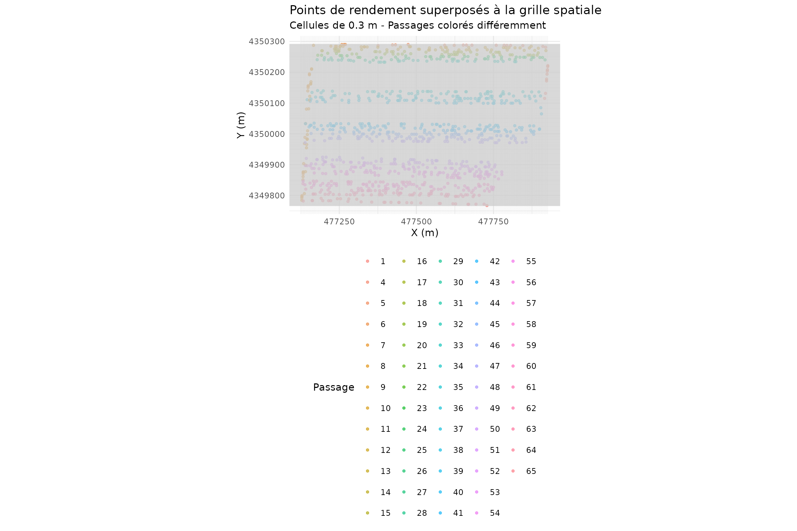
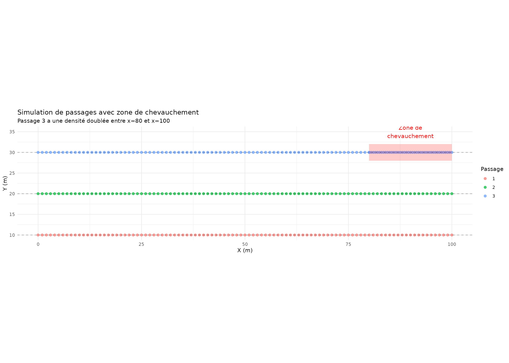

Filtre de Chevauchement (Overlap)
Détection et élimination des zones de recouvrement
Source:vignettes/filtre-chevauchement.Rmd
filtre-chevauchement.RmdIntroduction
Le filtre de chevauchement détecte et élimine les points situés dans des zones où plusieurs passages de la moissonneuse se superposent. Ces chevauchements créent un sur-échantillonnage qui fausse les statistiques de rendement.
Problématique
Principes mathématiques
1. Rasterisation spatiale
L’espace est discrétisé en une grille régulière de cellules carrées :
Où : - = cellule - = taille de cellule (cell size) - = coordonnées minimales du champ
2. Comptage des passages
Pour chaque cellule , on compte le nombre de points qui tombent dans cette cellule, regroupés par passage (Pass) :
3. Ratio de chevauchement
Le ratio de chevauchement mesure la densité relative d’une cellule par rapport à la moyenne :
Où est le nombre moyen de points par cellule.
Une variante pondérée par passage :
4. Seuil d’élimination
Une cellule est marquée comme “overlap” si :
Où est le seuil de chevauchement (défaut: 0.5).
Les points dans les cellules “overlap” sont éliminés selon une stratégie de sélection : - Garder uniquement le premier passage - Garder le passage avec le meilleur rendement - Garder aléatoirement un seul point
Implémentation
library(yieldcleanr)
library(ggplot2)
library(dplyr)
# Charger les données
file_path <- system.file("extdata", "sample1.txt", package = "yieldcleanr")
data_raw <- read_yield_data(file_path)
# Préparation
data <- latlon_to_utm(data_raw) %>%
convert_flow_to_yield() %>%
filter_data(type = "velocity", min_velocity = 0.5, max_velocity = 10) %>%
filter_data(type = "moisture", n_std = 3)
cat("=== Filtre de chevauchement ===\n")
#> === Filtre de chevauchement ===
cat("Points avant filtrage:", nrow(data), "\n")
#> Points avant filtrage: 21578
cat("Nombre de passages uniques:", length(unique(data$Pass)), "\n")
#> Nombre de passages uniques: 65Création de la grille
Paramètres de discrétisation
# Paramètres de la grille
cell_size <- 0.3 # 30 cm
overlap_threshold <- 0.5
cat("\n=== Paramètres de la grille ===\n")
#>
#> === Paramètres de la grille ===
cat("Taille des cellules:", cell_size, "m\n")
#> Taille des cellules: 0.3 m
cat("Seuil de chevauchement:", overlap_threshold, "\n")
#> Seuil de chevauchement: 0.5
cat("Surface par cellule:", cell_size^2, "m²\n")
#> Surface par cellule: 0.09 m²
# Calculer les dimensions de la grille
x_range <- range(data$X, na.rm = TRUE)
y_range <- range(data$Y, na.rm = TRUE)
nx <- ceiling((x_range[2] - x_range[1]) / cell_size)
ny <- ceiling((y_range[2] - y_range[1]) / cell_size)
cat("\nDimensions de la grille:", nx, "x", ny, "=", nx * ny, "cellules\n")
#>
#> Dimensions de la grille: 2669 x 1753 = 4678757 cellulesVisualisation de la grille
# Créer une visualisation simplifiée de la grille
set.seed(42)
# Échantillon de points pour visualisation
sample_data <- data %>%
sample_n(min(1000, nrow(data)))
# Créer la grille pour visualisation
x_seq <- seq(x_range[1], x_range[2], by = cell_size)
y_seq <- seq(y_range[1], y_range[2], by = cell_size)
# Graphique
p1 <- ggplot(sample_data, aes(x = X, y = Y)) +
geom_point(aes(color = factor(Pass)), size = 1, alpha = 0.6) +
geom_hline(yintercept = y_seq, color = "gray80", alpha = 0.3, size = 0.2) +
geom_vline(xintercept = x_seq[seq(1, length(x_seq), by = 10)],
color = "gray80", alpha = 0.3, size = 0.2) +
coord_equal() +
labs(title = "Points de rendement superposés à la grille spatiale",
subtitle = paste("Cellules de", cell_size, "m - Passages colorés différemment"),
x = "X (m)", y = "Y (m)", color = "Passage") +
theme_minimal() +
theme(legend.position = "bottom")
p1
Application du filtre
cat("\n=== Application du filtre de chevauchement ===\n")
#>
#> === Application du filtre de chevauchement ===
# Appliquer le filtre
data_filtered <- detect_anomalies(data,
type = "overlap",
cellsize = cell_size,
overlap_threshold = overlap_threshold)
cat("Points après filtrage:", nrow(data_filtered), "\n")
#> Points après filtrage: 21578
cat("Points retirés:", nrow(data) - nrow(data_filtered), "\n")
#> Points retirés: 0
cat("Taux de rétention:", round(nrow(data_filtered)/nrow(data)*100, 1), "%\n")
#> Taux de rétention: 100 %Analyse des zones de chevauchement
Identification des zones problématiques
# Identifier les points éliminés
removed <- anti_join(data, data_filtered, by = c("X", "Y", "GPS_Time"))
cat("\n=== Analyse des zones de chevauchement ===\n")
#>
#> === Analyse des zones de chevauchement ===
cat("Points en zone de chevauchement:", nrow(removed), "\n")
#> Points en zone de chevauchement: 0
if (nrow(removed) > 0) {
# Distribution par passage
removed_by_pass <- removed %>%
group_by(Pass) %>%
summarise(n = n()) %>%
arrange(desc(n))
cat("\nDistribution par passage (top 5):\n")
print(head(removed_by_pass, 5))
# Visualisation
sf_removed <- sf::st_as_sf(removed, coords = c("Longitude", "Latitude"), crs = 4326)
sf_all <- sf::st_as_sf(data, coords = c("Longitude", "Latitude"), crs = 4326)
par(mfrow = c(1, 2))
plot(sf_all["Yield_kg_ha"], main = "Tous les points",
pch = 19, cex = 0.3, breaks = "jenks", key.pos = NULL)
plot(sf_removed["Yield_kg_ha"], main = "Points en chevauchement",
pch = 19, cex = 0.5, breaks = "jenks", key.pos = NULL)
}Exemple illustratif
Simulation de chevauchement
# Créer une simulation de passages avec chevauchement
set.seed(42)
# Passage 1 : ligne droite
pass1 <- data.frame(
x = seq(0, 100, by = 1),
y = rep(10, 101),
pass = 1,
yield = rnorm(101, mean = 5000, sd = 200)
)
# Passage 2 : ligne droite parallèle
pass2 <- data.frame(
x = seq(0, 100, by = 1),
y = rep(20, 101),
pass = 2,
yield = rnorm(101, mean = 5200, sd = 200)
)
# Passage 3 : avec chevauchement sur la fin
pass3_x <- c(seq(0, 80, by = 1), seq(80, 100, by = 0.5)) # Densité doublée à la fin
pass3 <- data.frame(
x = pass3_x,
y = rep(30, length(pass3_x)),
pass = 3,
yield = rnorm(length(pass3_x), mean = 4800, sd = 200)
)
# Combiner
all_passes <- bind_rows(pass1, pass2, pass3)
# Visualisation des passages
p2 <- ggplot(all_passes, aes(x = x, y = y, color = factor(pass))) +
geom_point(size = 2, alpha = 0.7) +
geom_hline(yintercept = c(10, 20, 30), linetype = "dashed", alpha = 0.3) +
annotate("rect", xmin = 80, xmax = 100, ymin = 28, ymax = 32,
alpha = 0.2, fill = "red") +
annotate("text", x = 90, y = 35, label = "Zone de\nchevauchement",
color = "red", size = 4) +
labs(title = "Simulation de passages avec zone de chevauchement",
subtitle = "Passage 3 a une densité doublée entre x=80 et x=100",
x = "X (m)", y = "Y (m)", color = "Passage") +
theme_minimal() +
coord_equal()
p2
Calcul du ratio de chevauchement
# Discrétiser en cellules de 5m
cell_sim <- 5
all_passes$cell_x <- floor(all_passes$x / cell_sim)
all_passes$cell_y <- floor(all_passes$y / cell_sim)
# Compter les points par cellule
cell_counts <- all_passes %>%
group_by(cell_x, cell_y) %>%
summarise(
n_points = n(),
n_passes = n_distinct(pass),
.groups = 'drop'
)
cat("\n=== Comptage par cellule (simulation) ===\n")
#>
#> === Comptage par cellule (simulation) ===
cat("Cellules occupées:", nrow(cell_counts), "\n")
#> Cellules occupées: 63
cat("Moyenne de points par cellule:", round(mean(cell_counts$n_points), 1), "\n")
#> Moyenne de points par cellule: 5.1
cat("Max points dans une cellule:", max(cell_counts$n_points), "\n")
#> Max points dans une cellule: 11
# Identifier les cellules en chevauchement
mean_points <- mean(cell_counts$n_points)
cell_counts$ratio <- cell_counts$n_points / mean_points
cell_counts$is_overlap <- cell_counts$ratio > 1.5
cat("\nCellules en chevauchement (ratio > 1.5):",
sum(cell_counts$is_overlap), "\n")
#>
#> Cellules en chevauchement (ratio > 1.5): 4
print(cell_counts %>% filter(is_overlap))
#> # A tibble: 4 × 6
#> cell_x cell_y n_points n_passes ratio is_overlap
#> <dbl> <dbl> <int> <int> <dbl> <lgl>
#> 1 16 6 11 1 2.14 TRUE
#> 2 17 6 10 1 1.94 TRUE
#> 3 18 6 10 1 1.94 TRUE
#> 4 19 6 10 1 1.94 TRUEParamètres recommandés
Choix de la taille de cellule
| Taille de cellule | Application | Avantage | Inconvénient |
|---|---|---|---|
| 0.1 m (10 cm) | Très précis | Détecte les micro-chevauchements | Très sensible au bruit |
| 0.3 m (30 cm) | Standard USDA | Bon compromis précision/robustesse | Peut manquer les chevauchements légers |
| 0.5 m (50 cm) | Données bruitées | Moins sensible au bruit GPS | Moins précis |
| 1.0 m (1 m) | Champs très larges | Robustesse maximale | Détecte uniquement les gros chevauchements |
Impact sur les statistiques
cat("\n=== Impact sur les statistiques ===\n")
#>
#> === Impact sur les statistiques ===
# Avant filtrage
stats_before <- data.frame(
metric = c("Nombre de points", "Rendement moyen", "Écart-type", "CV (%)"),
value = c(
nrow(data),
mean(data$Yield_kg_ha, na.rm = TRUE),
sd(data$Yield_kg_ha, na.rm = TRUE),
sd(data$Yield_kg_ha, na.rm = TRUE) / mean(data$Yield_kg_ha, na.rm = TRUE) * 100
)
)
# Après filtrage
stats_after <- data.frame(
metric = c("Nombre de points", "Rendement moyen", "Écart-type", "CV (%)"),
value = c(
nrow(data_filtered),
mean(data_filtered$Yield_kg_ha, na.rm = TRUE),
sd(data_filtered$Yield_kg_ha, na.rm = TRUE),
sd(data_filtered$Yield_kg_ha, na.rm = TRUE) / mean(data_filtered$Yield_kg_ha, na.rm = TRUE) * 100
)
)
comparison <- data.frame(
Métrique = stats_before$metric,
Avant = round(stats_before$value, 1),
Après = round(stats_after$value, 1),
Variation = round((stats_after$value - stats_before$value) / stats_before$value * 100, 2)
)
print(comparison, row.names = FALSE)
#> Métrique Avant Après Variation
#> Nombre de points 21578.0 21578.0 0
#> Rendement moyen 3516.2 3516.2 0
#> Écart-type 811.4 811.4 0
#> CV (%) 23.1 23.1 0Conclusion
Le filtre de chevauchement est important pour : 1. Éliminer le sur-échantillonnage dans les zones de manœuvre 2. Standardiser la densité de points sur tout le champ 3. Éviter les biais dans les statistiques de rendement 4. Améliorer la qualité visuelle des cartes
Points clés : - La rasterisation discrétise l’espace en cellules régulières - Le ratio de chevauchement compare la densité locale à la moyenne - Une taille de cellule de 0.3m est recommandée par l’USDA - Le seuil de 0.5 élimine les zones avec 50% plus de points que la moyenne
Recommandation : Utiliser une taille de cellule adaptée à la résolution des données. Pour des données avec un point tous les 0.5-1m, une cellule de 0.3m est appropriée. Pour des données plus denses, réduire la taille de cellule.